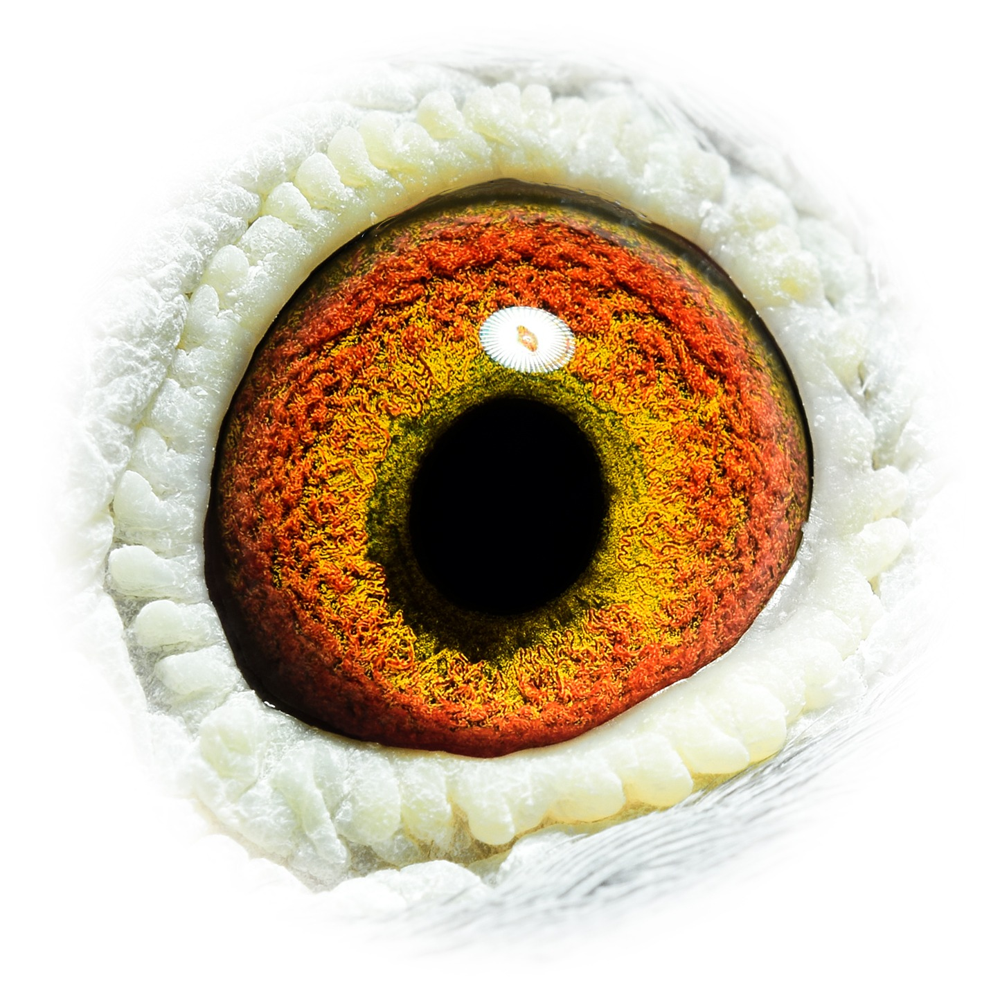
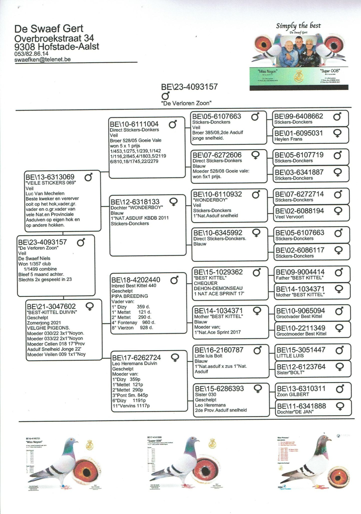

Kweekprofiel
BE23-4093157 · Gert De Swaef

De Swaef / Best Kittel
BE23-4093157
De Verloren Zoon is afkomstig van het topkweekhok van Gert De Swaef en verenigt Stickers-Donckers met Best Kittel-invloed.
Beschikbaar beeldmateriaal van De Verloren Zoon.

Eén duidelijke stamboom per duif, zodat de pagina rustig en professioneel blijft.
